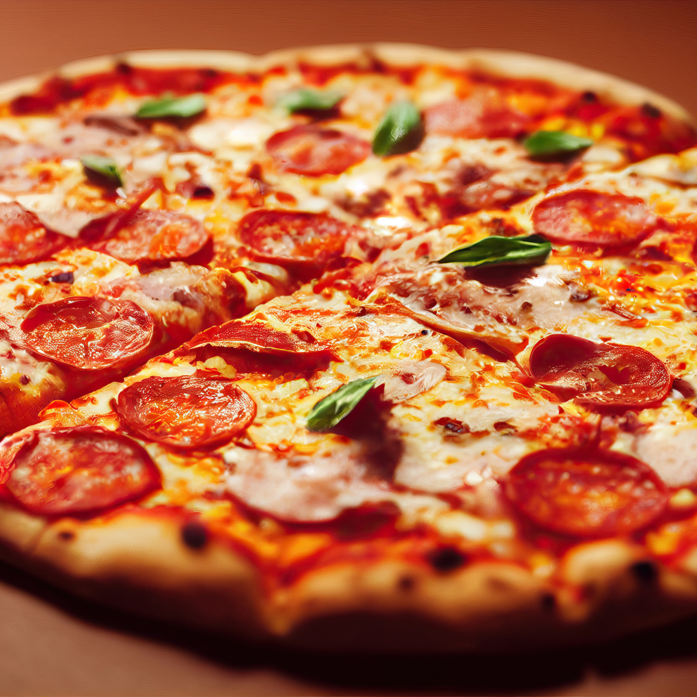

Receitas de Vó
- Reviva boas memórias

Massa de pizza da Vovó
INGREDIENTES:
- 1 kg de farinha de trigo
- 3 xícaras de água morna
- 1 colher (chá) de sal
- 1 colher (sopa) de pinga
- 30 g de fermento biológico
- 3/4 xícaras de óleo
- 1 colher (chá) de açúcar
MODO DE PREPARO:
- Misture o fermento, o sal e o açúcar em um pouco de água morna, até que o fermento esteja completamente dissolvido.
- Em seguida, adicione metade da medida de farinha de trigo, o óleo e mexa até criar uma consistência pastosa.
- Acrescente o restante da farinha de trigo, a pinga, a água morna e misture bem.
- Assim que a massa desgrudar das mãos, deixe crescer por 30 minutos.
- Abra os discos, fure a massa com um garfo e pincele o molho.
- Leve ao forno médio (180° C), preaquecido, por 15 minutos.